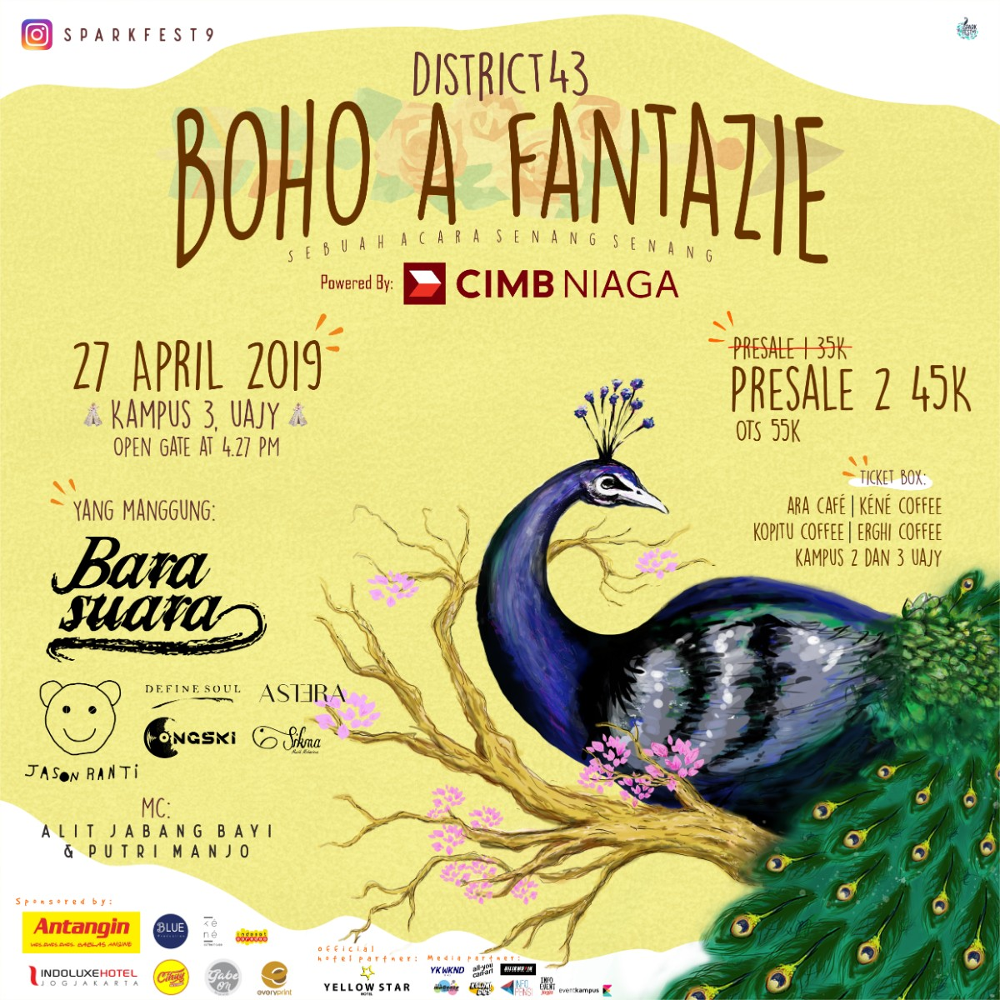

Closing Ceremony of SPARKFEST#9 : "DISTRICT 43"

📣DISTRICT 43📣
🍃 BOHO A FANTAZIE 🍃
Senat Mahasiswa Fakultas Teknologi Industri UAJY proudly present: The closing ceremony of SPARKFEST#9: “DISTRICT 43”💫 ㅤㅤ
Our special main guest star
ㅤㅤ
BARASUARA🔥🔥🔥
ㅤㅤ
Mark the date!
📅 Saturday, 27th April 2019
🎪 Campus 3, Atma Jaya Yogyakarta University
Grab your ticket as soon as possible!
💸 Presale 2: IDR 45K
ㅤㅤㅤㅤ
Grab Your Ticket at:
🎫 Lobby Kampus 3 FTI UAJY
⏰ 09.30 - 15.30 (Monday-Friday)
🎫 Selasar Kampus 2 UAJY
⏰ 09.30 - 15.30 (Monday-Friday)
🎫 Cafe Kopitu
⏰ 18.00 - 22.00 (Thursday & Saturday )
🎫 Ara Cafe
⏰ 18.00-22.00 (Wednesday)
🎫 Erghi Coffee
⏰ 19.00-22.30 (Saturday)
🎫 Kene Coffee
⏰ 18.00-22.00 (Tuesday, Wednesday, Thursday & Saturday)
Are you ready to spark?✨ Cause we are so ready!!💯
ㅤㅤ
Catch us on📱:
Instagram: @sparkfest9
Line@: @btw4970j
Twitter: @sparkfest9
#infopensi #infopensijogja
#barasuara #jasonranti #definesoul #astera
#infopensiyogyakarta #infopensisolo #infokonserjogja #infokonser #jogjapunyaacara #jogjaevent #eventjogja #jogjaevent #penunggangbadaiJogja #penunggangbadai